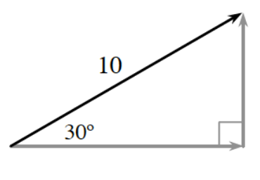
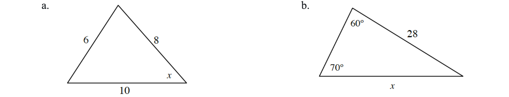
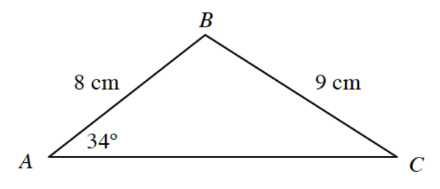
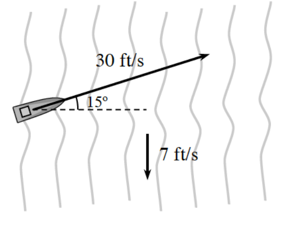
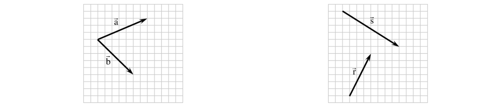
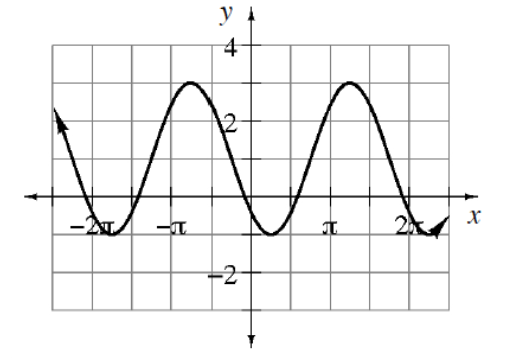

Sketch two vectors, one going \(22\) miles due east and the other \(22\) miles due south. What is the resultant, or sum, of the two vectors? State the magnitude and direction of the resultant vector.
Using the diagram, if you know the magnitude (\(10\)) and direction (\(30^\circ\)) of a vector, how can you determine the components of the vector? State the components of the vector.

Vector \(\vec{\text{b}}\) has an initial point of \(\left(-1,0\right)\) and an endpoint of \(\left(2,2\right)\).
Express \(\vec{\text{b}}\) in component form.
Solve each triangle below.

An exponential function passes through the points \(\left(2,36\right)\) and \(\left(4,81\right)\).
Write the equation of an exponential function that passes through the two given points and has a horizontal asymptote of \(y = 0\).
If the function you wrote in part (a) is shifted so that it has a horizontal asymptote of \(y = 20\), and it now passes through the points \(\left(2,56\right)\) and \(\left(4,101\right)\), what will the equation of the new function be?
What is the inverse of each function below? Use correct notation.
\(h(x)=2x^{3/2}\)
\(j(x)=4\log_5(x-1)\)
\(f(x)=4(2x-3)^{1/3}\)
Given the triangle, calculate \(AC\).

This problem is a checkpoint for graphs, equations, and roots of polynomial functions.
Sketch a graph of the polynomial function \(p(x)=(x-4)(x-2)^2(x+3)^2\). Label the intercepts.
Write a possible equation of a polynomial function, in factored form with real coefficients, that has roots of \(x=-1\), \(-1-3i\), and \(3-\sqrt{3}\).
Determine all of the roots of \(p(x)=2x^4-3x^3+2x^2-6x-4\).
A boat is headed across a river at an angle of \(15^\circ\) with a rate of \(30\) feet per second. The current is heading down stream at a rate of \(7\) feet per second. The river is \(1000\) feet wide.

Express the velocity of the boat as a vector in component form without including the effect of the river.
The actual motion of the boat is the combination of the motion of the boat and the current in the river. What is the vector that gives the actual motion of the boat?
How long will it take the boat to cross the river?
How far up river will the boat arrive?
Use the diagrams below to complete the following problems.

Copy \(\vec{\text{a}}\) and \(\vec{\text{b}}\) onto graph paper. Draw \(-\vec{\text{b}}\). Then add \(\vec{\text{a}}\) and \(-\vec{\text{b}}\). Explain why you can label your answer \(\vec{\text{a}} - \vec{\text{b}}\).
Copy \(\vec{\text{r}}\) and \(\vec{\text{s}}\) onto graph paper. Then draw \(\vec{\text{r}} - \vec{\text{s}}\).
Harold, the happy concrete guy, got a call on the phone about some concrete he has to pour for an oddly shaped triangular patio. The only information he is given is that the side lengths were \(5, 6\), and \(8\) meters long.
Calculate the angles for Harold so he can stay happy.
What is the area of the patio that Harold will be forming?
A \(100\) g sample of a radioactive isotope is taken from a protective container. After \(4\) hours the sample decays to \(85\) g. What is the half-life of the substance?
Using the smallest possible horizontal shift, write an equation for the graph in terms of:

sine
cosine
Solve: \(x-\frac{1}{x}=1\)
This problem is a checkpoint for transformations of rational functions. Graph each of the following rational functions. State the locations of any asymptotes.
\(r(x)=\frac{1}{x+2}+5\)
\(q(x)=\frac{2x}{x+1}\)
\(t(x)=\frac{4x-1}{x-5}\)